Jak wrzucić strone na githuba
link do strony z githubem
1 krok
po zalogowaniu sie klikamy +
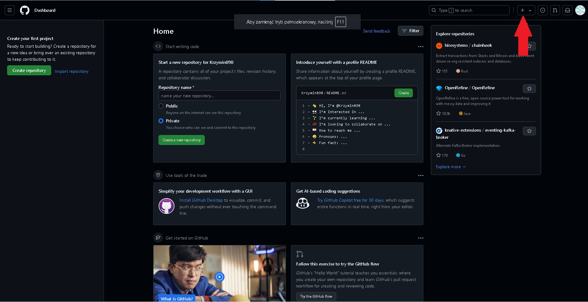
2 krok
nestępnie klikamy new repository
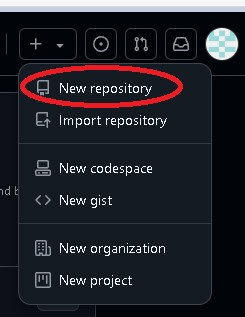
3 krok
następnie wpisujemy Repository name a następnie create repository
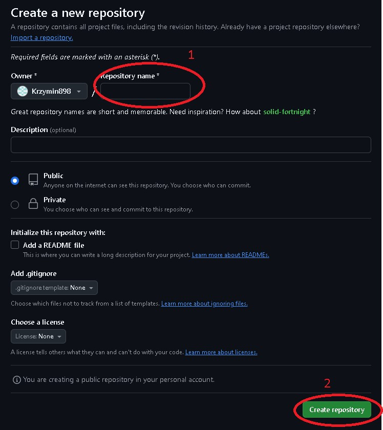
4 krok
następnie klikamy uplouading an existing file
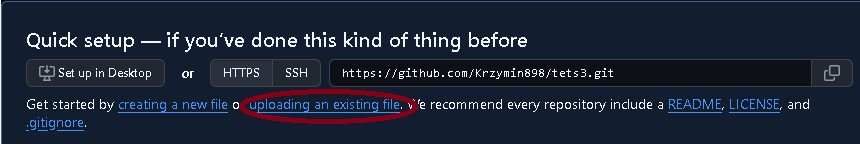
5 krok
następnie klikamy choose your files i dodajemy strona(główna strone musi być nazwana index.html inaczej wyskoczy błąd) + zjecia,gify,i strony od hiperlinków nie zależnie w jakiej kolejności następnie commit changes
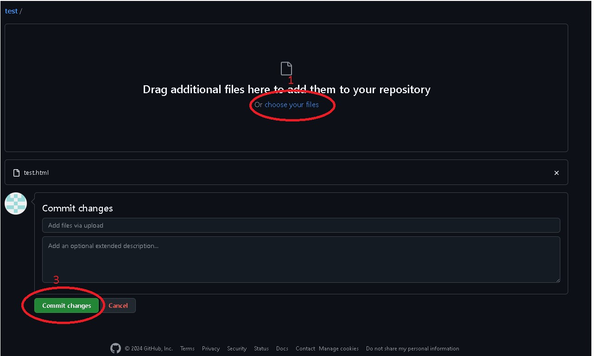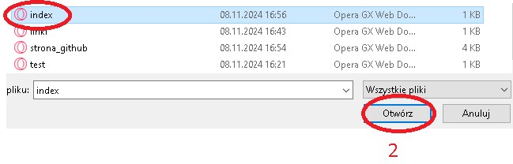
6 krok
następnie klikamy w ustawinia i wchodzimy w zakładke pages
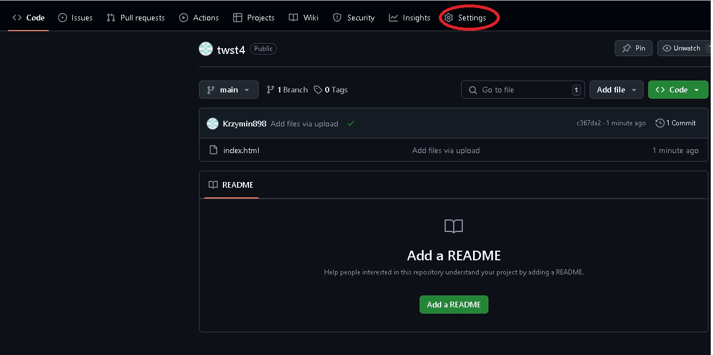 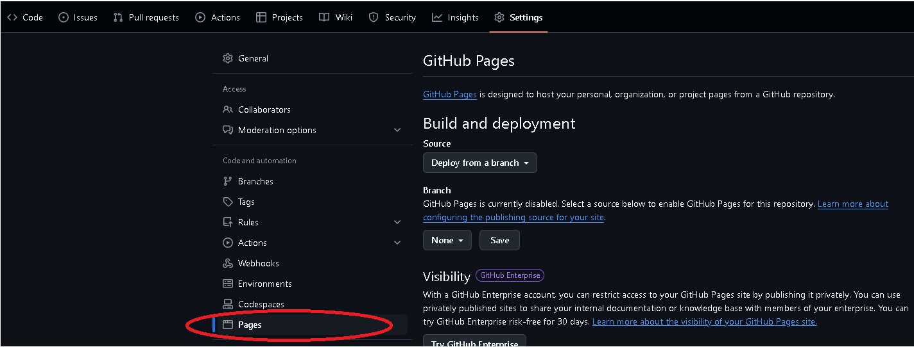
7 krok
potem w zakładce pages zmieniamy branch z none na main oraz zapisujemy przyciskiem save
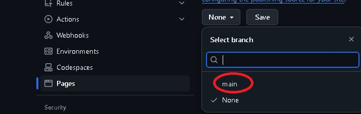 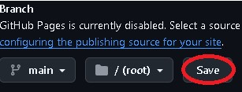
8 krok
następnie w zakłądce pages zmieniamy branch z none na main oraz zapisujemy przyciskiem save
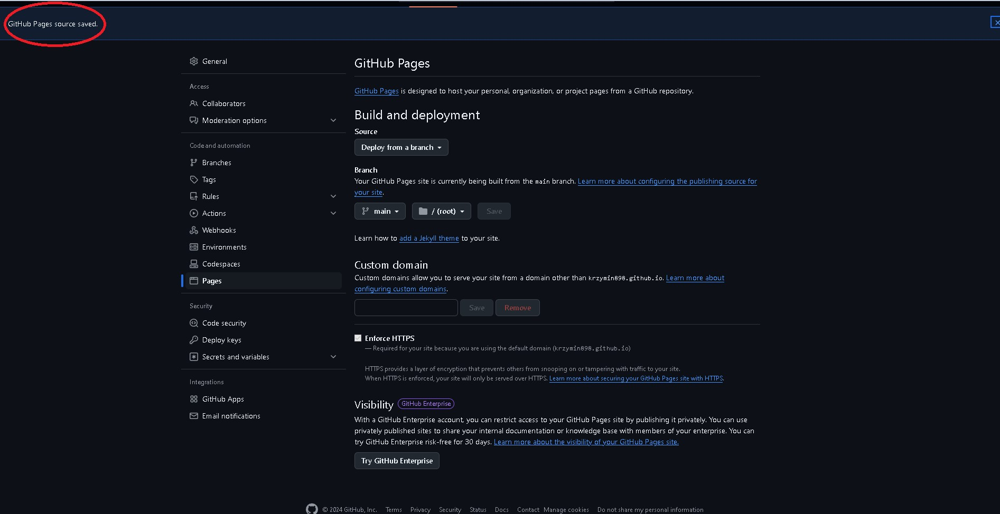
9 krok(ostatni)
po odczekaniu nie wiecej niż minuty i odświeżeniu storny otrzymujemy link do naszej storny
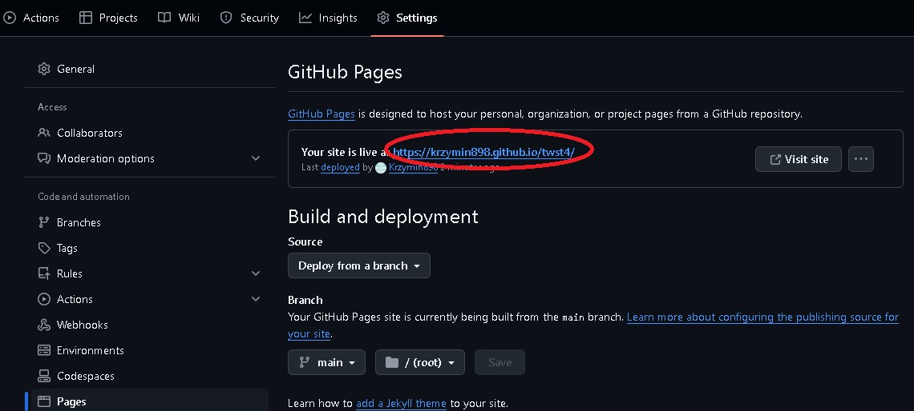